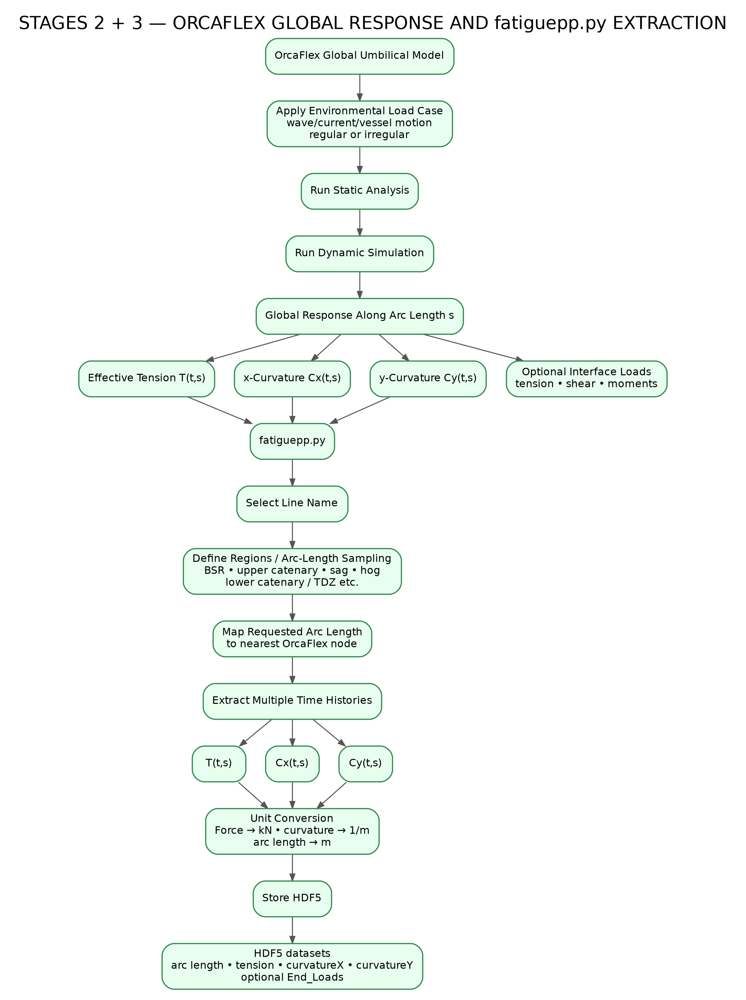

This branch follows the master map exactly from the OrcaFlex global umbilical model, through static and dynamic analysis, into fatiguepp.py extraction, arc-length sampling, unit conversion and HDF5 storage.
Click any node for its source-based role in the chain.
Global line model used for the fatigue response calculation.
wave / current / vessel motion · regular or irregular
Static analysis stage from the master workflow.
Dynamic response simulation for the selected load case.
Response field available along the umbilical arc length.
Time and arc-length dependent effective tension.
x-curvature response history.
y-curvature response history.
tension · shear · moments
Extraction stage used by the master workflow.
Select the OrcaFlex line to extract.
BSR · upper catenary · sag · hog · lower catenary / TDZ etc.
Requested sampling position → available model node.
Extracted tension history.
Extracted x-curvature history.
Extracted y-curvature history.
Force → kN · curvature → 1/m · arc length → m
arc length · tension · curvatureX · curvatureY · optional End_Loads
This page is the interactive version of Stages 2 + 3.
